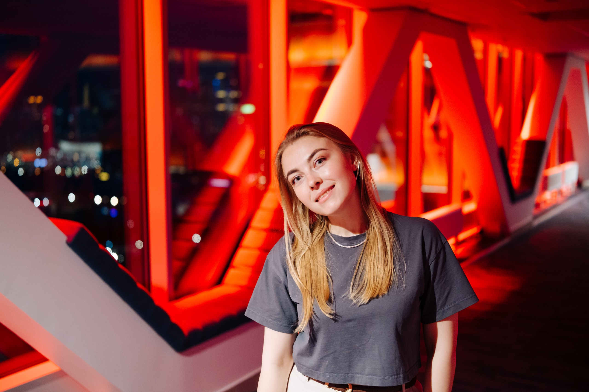

Управляю образовательными продуктами, онлайн-запусками и партнёрскими проектами в edtech и bigtech. Создаю события, которые работают на бренд, охват и аудиторию.

Онлайн-запуски, офлайн-события, партнёрские спецпроекты и федеральные проекты
Флагманский образовательный продукт: студенты решают реальные бизнес-кейсы от структур Сбера и индустрии. Три запуска, ~3 000 участников, 7+ кейсодателей.
Главный риск — отсутствие кейсодателей, готовых бесплатно подготовить кейс для студентов. Второй риск — студенты не справятся с уровнем кейса.
Качественно выстроенные отношения с кейсодателями позволили повторно использовать материалы в разных запусках — это сэкономило значительные ресурсы продуктовой, методической команды и команды сопровождения. Лучше всего такие запуски работают с промо на широкую аудиторию и дальнейшим отбором лучших 100 — мотивация сильнее. Студенты показали хорошие готовые прототипы, 90 % кейсодателей взяли решения на детальное изучение. Я бы добавила дополнительный воркшоп по питчингу проектов для студентов. Ещё можно здорово кастомизировать каждый запуск под конкретный бизнес-юнит — получилась бы win-win PR-история.
Онлайн-курс по digital-маркетингу: от концепции и продакшена до промо-запуска. 10 000 участников через вузы и платное привлечение.
Главные риски — сроки реализации, бюджет (продакшн и промо), показатели по количеству участников.
За счёт качественного выстраивания долгосрочных отношений с коллегами удалось привлечь экспертов из всех контентных бизнес-юнитов — ВКонтакте, VK Реклама, VK Клипы, VK Видео, Дзен, Одноклассники — на безвозмездной основе. Не удалось добиться отдельного бюджета на промо: курс стартовал в общей кампании, что ограничило охваты. Позже показатели были закрыты через вузы-партнёры. Анализ статистики показал, что студенты из вузов доходили до конца на 70% чаще, чем привлечённые через промо. Метрику дополнительно добивала через проект «Творческая лаборатория VK». Проект продолжает развиваться в компании.
Онлайн-курс для преподавателей вузов с офлайн-финалом в Крыму. 80 лучших финалистов — пятидневный интенсив на площадке арт-кластера Таврида.
Сложное взаимодействие с партнёром. Очень «непростой» статус места расположения финала (требование партнёра). Размытые зоны ответственности между партнёрами и организаторами.
Проект был сложным, честно скажу. Когда зоны ответственности размыты — помогает документация: дорожная карта возвращала участников проекта к конкретике. Эффективно сработала база контактов Тавриды, а также точечное привлечение преподавателей из Южного федерального округа. В следующий раз я бы усилила концепцию финала профильными экспертами VK и заранее сформировала бы пакет методических материалов для поддержки преподавателей.
Курс + практика в бизнес-юнитах VK. Три запуска с ВШЭ и МГУ, 100 студентов-финалистов в каждом отборе, NPS бизнес-юнитов 90%.
Бизнес не захочет бесплатно участвовать — тратить ресурс сотрудников. Бизнес-юниты останутся недовольны уровнем знаний студентов — это отразится на дальнейшем взаимодействии с VK Education и внутреннем бренде.
Ключевым фактором успеха стали выстроенные, доверительные отношения с бизнес-юнитами VK. Глубокий аккаунтинг и развитые софт-скиллы позволили нивелировать страхи бизнеса относительно трудозатрат — и они оставались вовлеченными до финала. Проект стал инструментом внутреннего брендинга VK Education — ключевой успех: высокий NPS именно внутренних заказчиков. Яркое УТП проекта дало хорошие цифры в конверсию прохождения курса «Новые медиа»; вузы-партнёры получили классный продукт для студентов — лояльность вузов одна из ключевых целей VK Education. Этот проект — мой любимец. Его можно делать всегда по-разному: хоть камерно, хоть охватно. Проект поддержал руководитель VK Education.
Набор активных студентов-представителей VK в вузах. Запуск мини-приложения, онлайн-эфир, промо-ролик. Заявки +293% к прошлому году.
Слишком много этапов воронки — на каждом теряется часть лидов. Отсутствие руководителя проекта на старте.
Риски удалось нивелировать за счёт создания и постоянного ведения сообщества — оно держало участников в тонусе и помогало проходить каждый этап воронки. Проводили прямые эфиры с участниками. Позже, с переходом проекта к новому руководителю, выстроилось более качественное взаимодействие с командами маркетинга и PR. Это был мой первый проект в большой компании, и сейчас, оглядываясь назад, я бы многое сделала иначе.
Крупнейший фестиваль молодого искусства России (~500 000 посетителей). Организация образовательного шатра VK с нуля: 3 дня программы, 4 эксперта привлечено на безвозмездной основе.
Особый статус партнёра (GR). Сложное географическое расположение — Крым. Трудно привлечь экспертов, готовых выделить около пяти дней на полноценную командировку.
Сработало всё отлично. Были эксперты, которые отказывались после того, как дали согласие — но широкий круг знакомств позволил компенсировать этот риск и привлечь хорошее количество экспертов для комфортной образовательной сетки. Непосредственно личное участие на площадке способствовало росту уверенности экспертов, что положительно сказалось на их согласии ехать в командировку.
Дни карьеры, дни открытых дверей, форумы, конференции. Развитие стратегических партнёрств с вузами через постоянный аккаунтинг и совместные активации.
Ключевые риски: сроки, бюджеты, уровень мероприятия. От опоздания подрядчиков до отмены мероприятия в последний момент.
Когда я выстроила самостоятельный аккаунтинг с конкретными вузами, я сформировала календарный план на год — все предполагаемые активности и распределённый бюджет. Это позволило присутствовать на ключевых мероприятиях вузов с нашими экспертами; взамен вузы поддерживали наши онлайн-активности, open call и запуски. Взаимодействие поддерживала постоянно: поздравления с праздниками, с днём рождения, с ключевыми событиями науки и образования. За счёт этого сложилась высокая лояльность ключевых вузов — и мероприятия удавалось делать в комфортных условиях.
Федеральный иммерсивный музей в поезде. Руководство волонтёрским корпусом 7 000+ человек и выстраивание онлайн-поддержки 24/7 с нуля по всей России.
Проект очень зависит от органов исполнительной власти региона. В каждом городе были сложности, пока регион не принял проект хотя бы раз. Высокая конкуренция за участие: многие НКО стремились стать партнёром, задача — обеспечить участие конкретной организации.
Создала систему обучающих мероприятий и эфиров для каждой региональной команды — набор волонтёров практически нигде не вызвал сложностей (кроме совсем маленьких городов). Я лично курировала каждый регион в онлайне: разбирала сложные кейсы и помогала решать нестандартные ситуации. Для грамотного распределения зон ответственности и легитимизации команды на местах, я участвовала в совещаниях с Администрацией Президента и региональными властями, выстраивая эффективное GR-взаимодействие. Онлайн-поддержку 24/7 построила за счёт волонтёров из разных федеральных округов. Честно скажу: мне повезло с командой. В ней были люди, которые искренне любили этот проект и очень меня поддерживали — спустя пару месяцев я уже полностью доверяла им всю работу. Старшие приглядывали за новенькими.
Буду рада обсудить новые проекты, продукты и форматы сотрудничества.